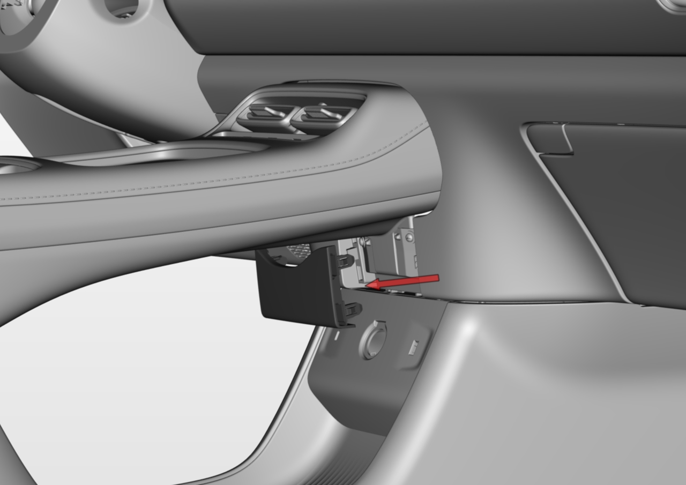
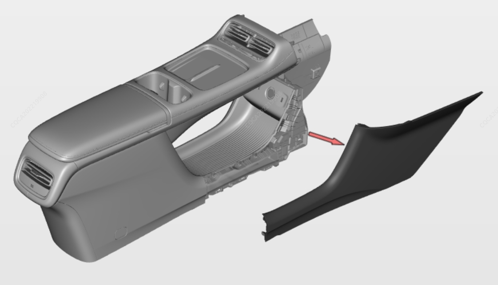
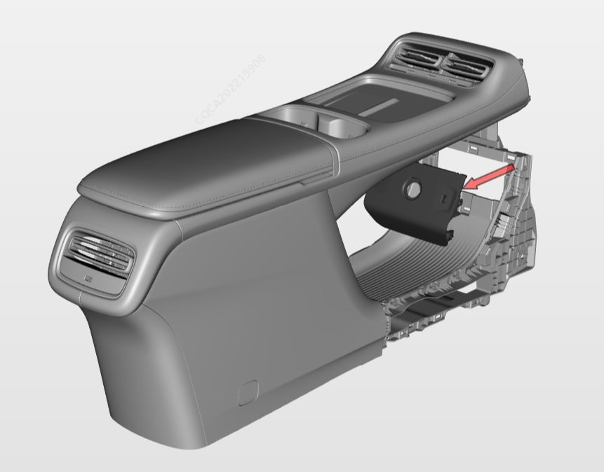
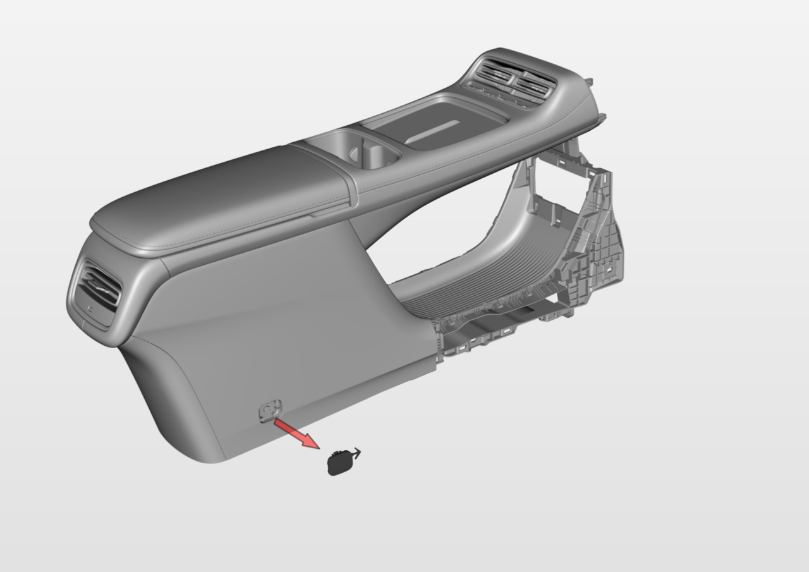
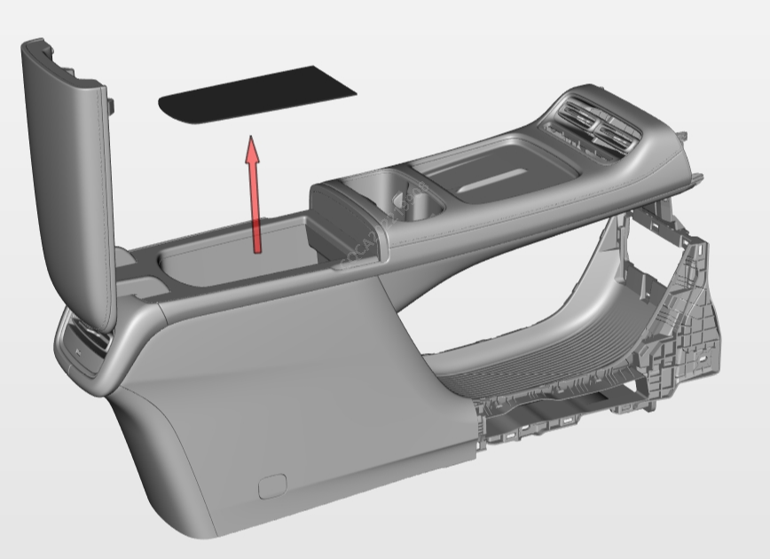
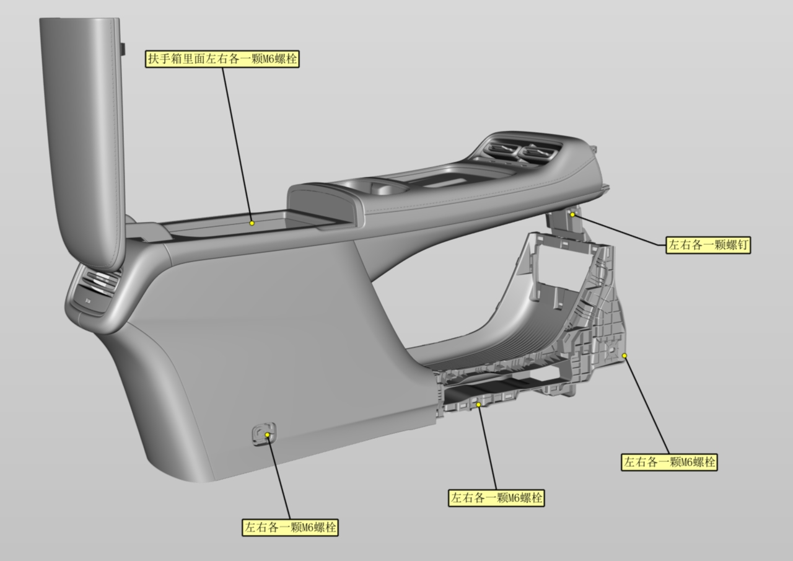
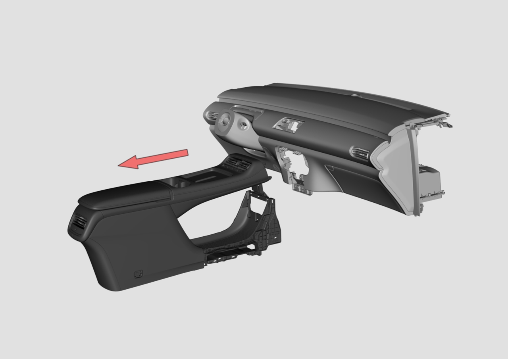
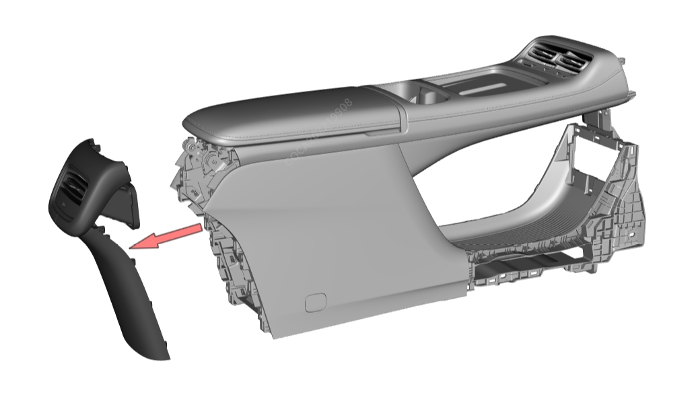
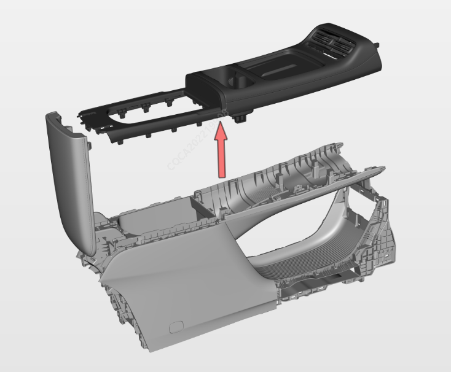

Снятие
Снять узел нижней центральной облицовочной панели панели приборов
С помощью лопатки отщелкнуть нижний край панели нижней центральной облицовочной панели панели приборов, чтобы все фиксаторы полностью вышли из зацепления с центральной консолью, и извлечь узел нижней центральной облицовочной панели панели приборов в направлении назад относительно автомобиля.

Снять узел правой боковой панели дополнительной приборной панели
С помощью лопатки поддеть правую боковую панель у ее основания рядом с ковровым покрытием, чтобы все фиксаторы вышли из зацепления с нижним каркасом центральной консоли, и извлечь узел правой боковой панели дополнительной приборной панели в направлении назад относительно автомобиля.

Снять узел левой боковой панели дополнительной приборной панели
Аналогично снятию узла правой боковой панели дополнительной приборной панели
Снять узел панели прикуривателя дополнительной приборной панели
С помощью лопатки приподнять верхний край панели прикуривателя, чтобы все фиксаторы вышли из зацепления с нижним каркасом центральной консоли, отсоединить 3 штекера жгутов проводов USB и извлечь узел панели прикуривателя дополнительной приборной панели.

Снять левую и правую крышки винтов
С помощью плоской отвертки поддеть и извлечь левую и правую крышки винтов (всего 2 шт.) в направлении наружу по пазу.

Снять коврик вещевого отделения дополнительной приборной панели
Откинуть подлокотник центральной консоли и извлечь коврик вещевого отделения дополнительной приборной панели

Снять узел дополнительной приборной панели
С помощью торцевой головки M6 и крестовой отвертки выкрутить соответственно 8 болтов и 2 винта узла дополнительной приборной панели, после чего вытянуть узел дополнительной приборной панели в направлении назад относительно автомобиля, чтобы все фиксаторы полностью вышли из зацепления с узлом панели приборов.


Снять узел задней панели дополнительной приборной панели
С помощью лопатки приподнять панель снизу в месте ее контакта с ковровым покрытием, извлечь узел задней панели назад, чтобы все фиксаторы полностью вышли из зацепления с центральной консолью, и отсоединить штекер жгута проводов USB.

Снять узел декоративной панели дополнительной приборной панели
Открыть подлокотник дополнительной приборной панели, с помощью лопатки приподнять панель по обеим сторонам в местах прилегания декоративной панели к верхнему каркасу дополнительной приборной панели, чтобы все фиксаторы полностью вышли из зацепления с центральной консолью, отсоединить штекеры жгутов проводов беспроводной зарядки, панели управления кондиционером, антенны Bluetooth и атмосферной подсветки, после чего извлечь узел декоративной панели дополнительной приборной панели движением вверх.

Установка
Порядок Установка обратен порядку Снятие